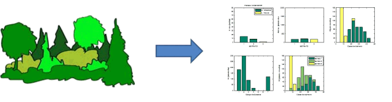
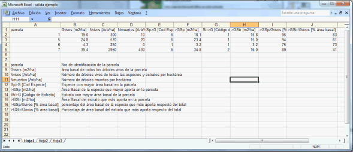
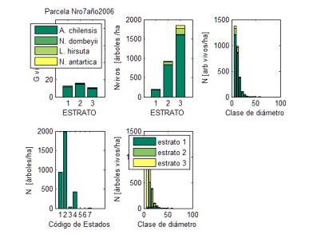

Este módulo tiene como objetivo proveer de
información para analizar estructuras de bosque nativo. El
tipo de datos que utiliza esta basado el formato de la red de
parcelas de inventario forestal permanente de la Reserva Loma del
Medio - Río Azul, Pcia de Río Negro, que es administrada
por el Instituto Nacional de Tecnología Agropecuaria, INTA EEA
Bariloche.
Estas parcelas son empleadas para el monitoreo de
la dinámica de bosques con la presencia predominante de
Ciprés de la Cordillera y Coihue, y otras especies
acompañantes.
El procesador se ha desarrollado con la
posibilidad de que el usuario pueda personalizar algunos de los
criterios utilizados en el análisis de la estructura del
bosque, aunque aún resta programar aspectos que permitan
mejorar la descripción del mismo.

calcuLEMUs lee archivos de datos de inventarios
forestales y produce salidas de parámetros de rodal para cada
parcela salidas gráficas y tabuladas de las distribuciones del
número de individuos y área basal, distribuidos por
clases de diámetros, estratos verticales de la
vegetación, especies presentes, y clases de estado
sanitario.
SALIDA GENERAL DE
DATOS
Salida tabulada en archivo de Excel con datos
de todas las parcelas presentes en el archivo
procesado.

SALIDA DE DATOS POR
PARCELA
Salida tabulada en archivo de Excel propio de la
parcela.
-
Número de
árboles vivos por especie y estrato
vertical
-
Área basal
por especie y estrato vertical
-
Número de
árboles vivos por especie y clase
diamétrica
-
Área basal
por especie y clase diamétrica.
SALIDA GRÁFICA POR
PARCELA
Por cada parcela se genera un archivo de imagen
tipo *.emf de Windows con las tablas representadas en las salidas
de distribuciones por estratos, especies y clase
diamétrica.

FORMATO DEL ARCHIVO DE INGRESO DE
DATOS
Los datos deben ordenarse de forma tabulada
comenzando por la columna que identifica a que parcela corresponde
el registro del árbol de la fila n. A continuación se
presenta los encabezados y descripción de los datos
utilizados.
|
Idparcela(columna A)
|
Clave única de identificación de la
parcela dentro del sistema de almacenamiento
|
|
Parcela(columna
B)
|
nombre de la parcela, es el nombre comunmente
empleado
|
|
Fecha(columna
C)
|
Año de
realización del inventario
|
|
Arbol(columna
D)
|
número de
identificación del árbol dentro de la
parcela
|
|
Especie(columna
C)
|
código de especie de acuerdo a la hoja
“ cod especies”
|
|
Estado(columna
D)
|
código de estado sanitario u otro de acuerdo
ala hoja “codestado”
|
|
Dap(columna
E)
|
diámetro a la altura
del pecho en milímetros
|
|
Disthtot(columna
F)
|
distancia en metros para la determinación de
altura total con clinómetro, contemplado pero no se procesa en
la versión prototipo.
|
|
Pendientehtot(columna G)
|
pendiente en grados desde el punto de observacion
y el arbol, para la determinación de la altura total,
contemplado pero no se procesa en la versión
prototipo.
|
|
li_htot, y así
sucesivamente.
|
lectura inferior hecha a la base del árbol
en porcentaje, contemplado pero no se procesa en la versión
prototipo.
|
|
ls_htot
|
lectura superior hecha al ápice del
árbol en porcentaje, contemplado pero no se procesa en la
versión prototipo.
|
|
htot
|
altura total en metros calculada o medida con
vara telescopica, vertex u otro instrumento. , contemplado pero no
se procesa en la versión prototipo.
|
|
disticv
|
distancia en metros para la determinación de
la altura de inicio de copa viva con clinómetro, contemplado
pero no se procesa en la versión
prototipo.
|
|
pendienteicv
|
distancia en metros para la determinación de
la altura de inicio de copa viva con clinómetro, contemplado
pero no se procesa en la versión
prototipo.
|
|
li_icv
|
lectura a la base del árbol para el calculo
de la altura de inicio de copa viva en porcentaje, contemplado pero
no se procesa en la versión prototipo.
|
|
ls_icv
|
lectura a la base de la copa del árbol para
el calculo de la altura de inicio de copa viva en porcentaje,
contemplado pero no se procesa en la versión
prototipo.
|
|
icv
|
altura de inicio de copa vivamedida en metros,
contemplado pero no se procesa en la versión
prototipo.
|
|
eap
|
edad a la altura del pecho en años,
contemplado pero no se procesa en la versión
prototipo.
|
|
etot
|
edad total , numero de anillos a 0,3 m de altura,
contemplado pero no se procesa en la versión
prototipo.
|
|
arbol
muestra
|
indicar con el código (0) sino es arbol
muestra, y señalar (1) si es un árbol muestra,
contemplado pero no se procesa en la versión
prototipo.
|
|
Distancia
|
distancia en metros desde el centro de la parcela
es para mapear el árbol, contemplado pero no se procesa en la
versión prototipo.
|
|
rumbo
|
rumbo respecto del norte medido desde el centro
de la parcela, es para mapear el arbol, contemplado pero no se
procesa en la versión prototipo.
|
|
DAC
|
diámetro de ancho de copaen metros,
contemplado pero no se procesa en la versión
prototipo.
|
|
vigor
|
Hace referencia a una característica
individual, contemplado pero no se procesa en la versión
prototipo.
|
|
Estrato
|
Piso/altura
|
|
producto
|
Producto, 1: madera, 2:
poste, 3: leña, 4: viga
|
|
tendencia al desarrollo
|
Hace referencia al entorno de individuo en
cuestion (competencia)
|
|
solidez
|
Hace referencia a la
estabilidad del individuo
|
|
sup
|
superficie de la parcela en
metros cuadrados
|
|
fecha
|
fecha de realización del inventario o
inventario postraleo
|
|
observaciones
|
observaciones
|
|
sexo
|
Indica si el árbol es femenino o masculino.
Para el caso de Ciprés. Incorporación en la siguiente
versión
|
|
rodal
|
Número de rodal, por
solicitud de SFA El Bolsón
|
ASPECTOS QUE RESTAN INCORPORAR EN
INTA-PIBN
-
Asignación
de parcelas a rodales específicos y cálculo de
parámetros estadísticos por rodal.
-
Controles para
la verificación de datos completos.
-
Distribución de productos forestales por
especie y clase diamétrica.
-
Procesamiento
de datos de altura total y de inicio de copa por
estrato.
-
Estimación
del volumen de fuste por especie.
-
Módulo de
simulación de raleos / entresacas por estrato y
especie.
-
Mapeo de los
árboles en la parcela.
-
Incorporar el
análisis de la regeneración a la parcela de inventario y
procesamiento.
-
Incorporar el
análisis de sexo por individuos en el caso de
A chilensis.
-
Otros calculos
: diámetros medios cuadráticos total, por especies, por
estrato. Cálculo de muertos por especie, clase
diamétrica, estrato, etc.